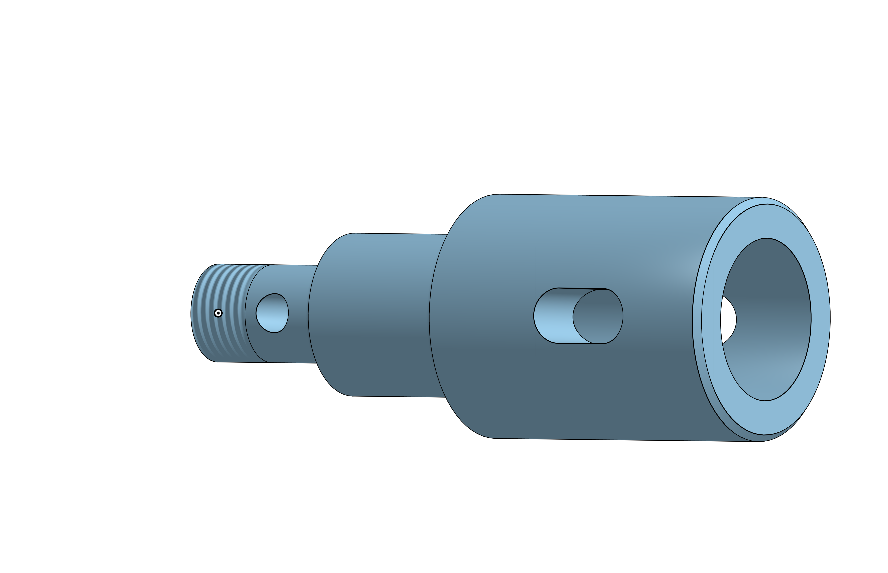
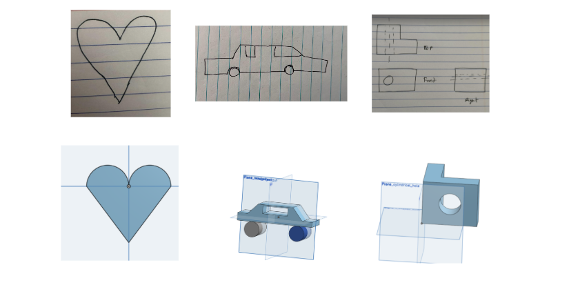
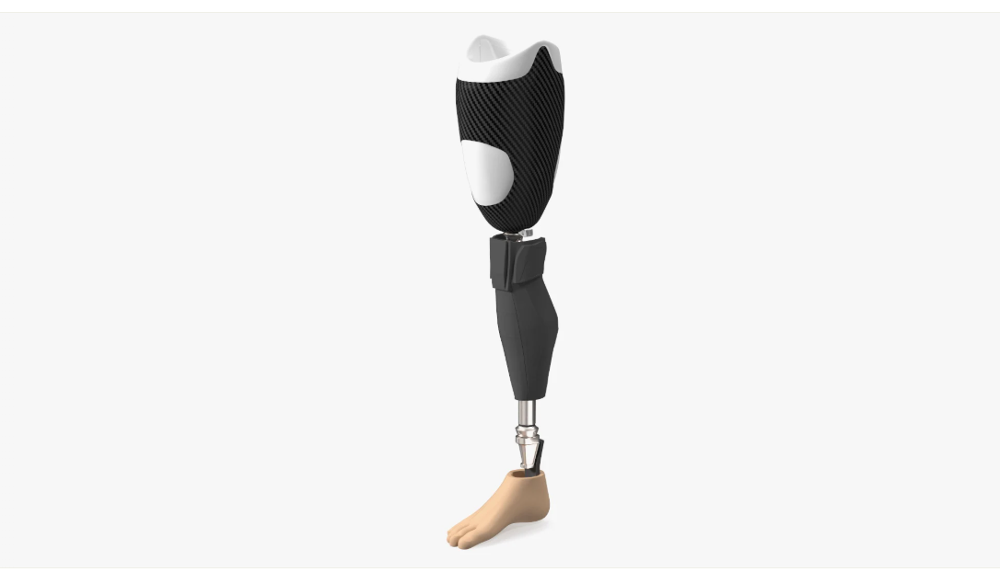
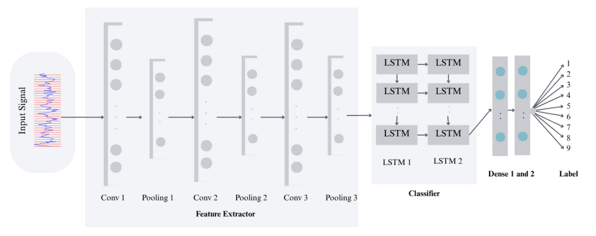
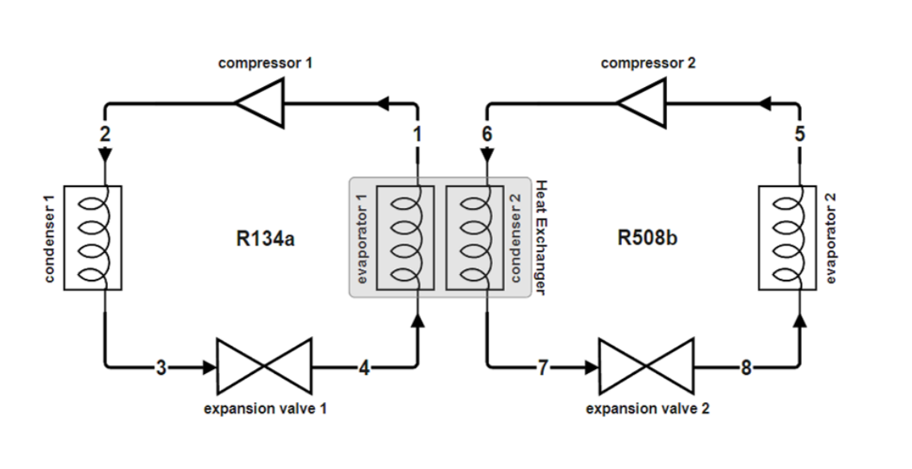
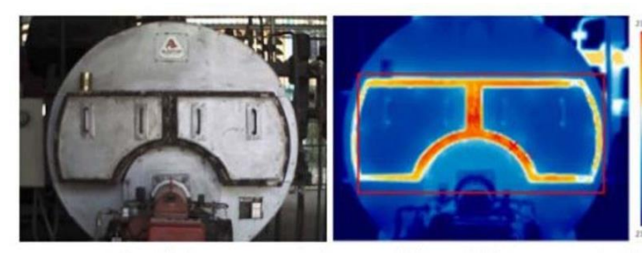
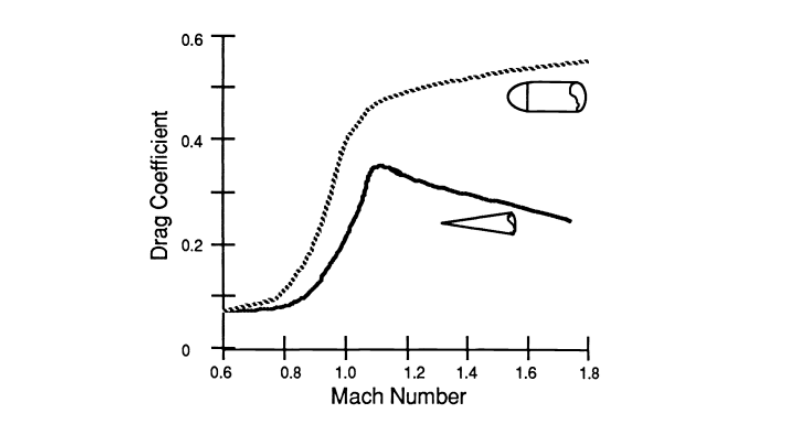
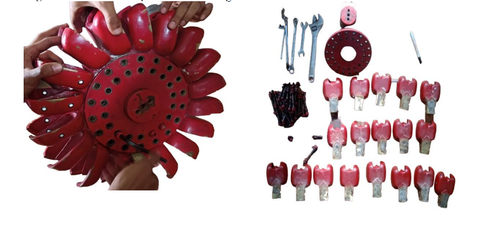
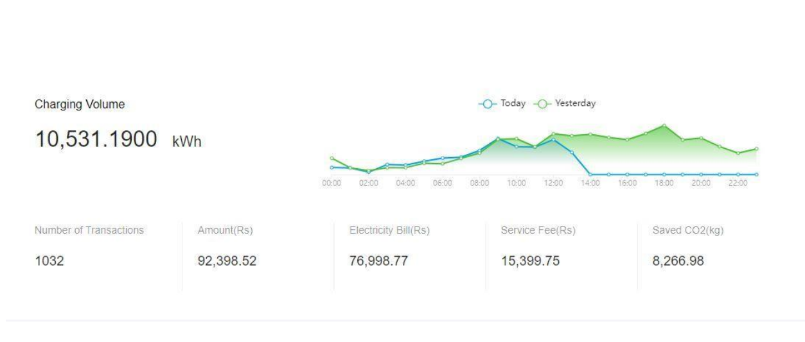

Finetuning LLMs for CAD Generation
July 10, 2026
Finetuning open LLM models to improve their ability to generate code that directly outputs .step files. This code generation capability successfully recreates 60% of engineering shapes.
Read My

July 10, 2026
Finetuning open LLM models to improve their ability to generate code that directly outputs .step files. This code generation capability successfully recreates 60% of engineering shapes.

August 5, 2026
Bringing CAD to younger students requires an intuitive interface that doesn't overwhelm them with complex operations. Solidify K12 is a project aimed at creating a simplified, web-based 3D modeling tool tailored for K-12 education.

June 20, 2026
Prosthetic design usually requires expensive proprietary software. By leveraging Blender, an open-source 3D creation suite, we can dramatically lower the barrier to entry for developing custom-fitted prosthetics.
Academic Works

Field: Hydropower & Machine Learning | Date: 2024
Abstract: This research explores the application of Artificial Intelligence and Machine Learning techniques to detect faults in Francis Turbines at an early stage, reducing downtime and maintenance costs in hydropower generation.

Field: Thermodynamics | Date: 2024
Abstract: An analysis of the design and performance efficiency of cascade refrigeration systems, highlighting optimization strategies for industrial applications.

Field: Thermal Engineering | Date: 2023
Abstract: A comprehensive review analyzing the thermal performance and efficiency of various industrial boilers under different operational conditions.

Field: Optics & Material Science | Date: 2022
Abstract: A comprehensive review of Gradient Index (GRIN) glass, exploring its optical properties, manufacturing techniques, and applications in modern optics.

Field: Renewable Energy & AI | Date: 2023
Abstract: An AI-based approach to the study of metal hydrides for hydrogen storage, exploring storage efficiency and material properties using machine learning models.

Field: Physics Conference | Date: 2022
Abstract: Conference proceedings paper submitted in the Journal of Physics, featuring research presented at the Undergraduate Science Conference (USC) 3rd Edition.

Field: Academic Poster | Date: 2023
Abstract: Official research poster presented at the Undergraduate Science Conference (USC) 3rd Edition.